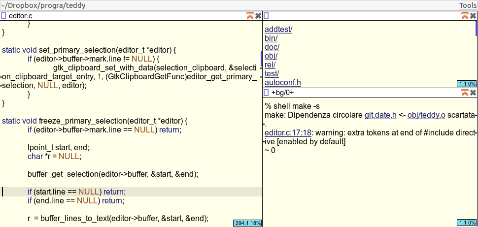
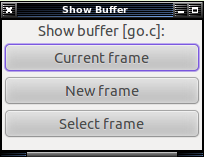
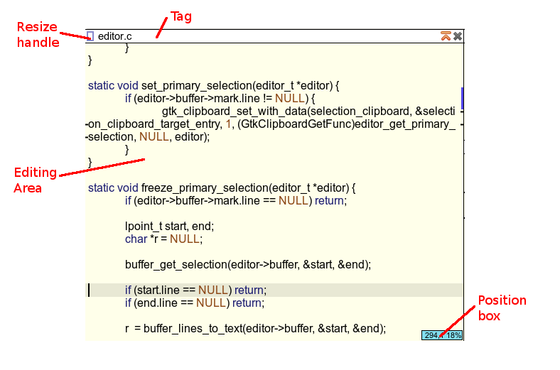

Teddy – introduction
Teddy is a tiled text editor inspired by the Acme text editor but with more configurability and more keyboard friendly.
In addition to letting you edit files, teddy lets you execute external programs in background and visualize their output. Other notable features:
- A scripting language
- No default keybindings
- Simple autoindent support
- Can open multiple files
- Tiling of editing frames
- History of executed commands
Fundamental concepts
Buffers
A buffer is, usually, the in-memory loaded version of a file. This is very similar to Emacs concept of buffers.
Buffers can be created by loading a file from disk, can be changed through the editor and saved by writing back to the file they were loaded from. Every buffer has a name, which is usually equal to the file name the buffer was loaded with, and a working directory, which usually is the directory the file was loaded from.
Two other special kinds of buffers exist:
- The +null+ buffer always exists, is created when teddy starts, it can not be closed or modified. It exists so that a frame pointing to a buffer that gets closed can be always assigned to another buffer.
- Background buffers, that have names prefixed with +bg/ are used to show the output of programs running in background. Those are created automatically when you try to execute an external program.
Frames

Each teddy window is divided into one or more columns, each column is divided into one or more editing frames. Editing frames (in short "frames") allow graphical editing of a buffer. Not every open buffer needs to always be associated with a frame and the buffer associated to a specific frame can be changed but the same buffer can not be associated with two frames at the same time.
Editing frames can be created manually or automatically. The ways to create frames manually will be explained in Mouse operations and Internal commands reference. Whenever a new buffer is opened, or a hidden buffer needs to be displayed teddy will show the user this dialog to pick which frame should be used:

by clicking [Select frame] or pressing [s] the user will be able to select an existing frame to show the buffer, by clicking [Current frame] or pressing [c] the current frame will be used and by clicking [New frame] or pressing [n] a new frame will be automatically created, using a heuristic.
Elements of a frame

- Resize Handle: When dragged with the mouse will resize the frame (and the column containing the frame). Its color also shows if the currently edited buffer was modified after the last save or not. When it's white (like in the image) the buffer was not modified, when it's blue the buffer was modified and needs to be saved. Other mouse operations are possible on the Resize Handle, see Mouse operations – Resize Handle
- Tag: Shows the name of the current buffer. Some mouse operations are available on this GUI element.
- Prompt and Command Line: They can be in one of three modes:
- Command mode, cmd>, like in the screenshot, commands entered in the command line will be executed.
- Incremental search mode, search>, text typed in the command line will be searched
- Argument mode, cmd('acommandname')>, text entered in the command line will be intepreted as the argument to acommandname, and executed.
- Editing Area: Lets the user edit the buffer associated with this frame.
- Position Box: Shows the current position of the cursor in the editing area, both as absolute position (line number, glyph number) and as percentage of the complete file.
Interaction
There are three ways to interact with teddy: